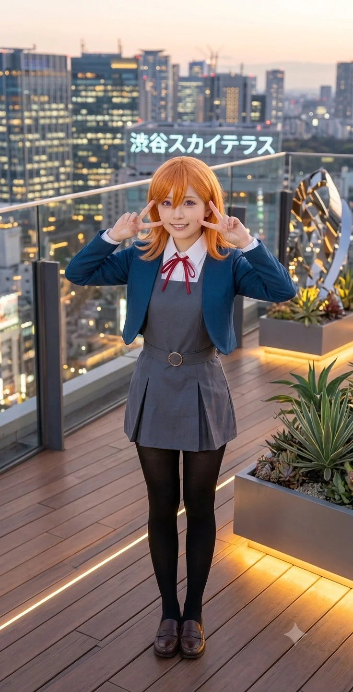

"노래 부르는 게 제일 좋아! 햄버그도 최고야!"
효빈광역시 안천구 당가동 출신의 대학생. 효빈대학교 음악학과에 재학 중이다. 과거 창건고 아이돌부의 전설이자 '현실판 시부야 카논'이라 불리는 시화음의 장녀(이란성 쌍둥이 중 언니)이다.
어머니 시화음의 유전자를 몰빵(?)으로 물려받아, 마리골드 빛깔의 머리카락(현실에선 밝은 갈색 톤), 맑고 동그란 눈망울, 그리고 음악을 향한 천재적인 재능과 불의를 참지 못하는 대장부 같은 성격마저 시부야 카논의 완벽한 복제판으로 자라났다. 특히 중학교 시절 지독한 혐덕이었던 임은혜와 살벌하게 대립하다가 결국 영혼을 구원(?)해주며 최고의 단짝이 된 서사가 유명하다. 현재는 대학 동기인 마루빈, 그리고 돈을 밝히는 오낙희 자매와 얽히며 환장의 캠퍼스 라이프를 갱신 중이다.
가노은은 어머니 시화음과 아버지가 운영하는 당가동의 분위기 좋은 카페에서 태어나고 자랐다. 어머니 시화음이 고등학교 시절 무대 공포증을 극복하고 노래의 재능을 꽃피웠던 것과 달리, 노은은 어릴 적부터 구김살 없이 밝고 쾌활하게 길거리나 집안 어디서든 노래를 흥얼거리고 다니는 당가동의 명물이었다.
외모부터 취향, 성격까지 어머니(시부야 카논 오시)를 너무나도 똑같이 닮아, 화음의 오랜 친구들인 당가영, 연월엽, 천사도 등이 카페에 놀러 올 때마다 노은을 보며 "이건 화음이가 자가분열을 한 수준이다"라며 기겁을 하곤 했다.
가노은과 쌍둥이 동생 가희나의 출생에는 엄청난 병원 전산 착오가 있었다. 태어날 당시 병원 전산 기록에는 2006년 12월 31일로 잘못 입력되었고, 부모님 역시 그 기록을 믿고 2006년생으로 출생신고를 마친 뒤 아이들을 2006년생 동급생들과 함께 당가초등학교에 입학시켰다.
그러나 초등학교 진학 이후, 두 자매가 큰 수술을 받아야 해서 과거 분만 기록을 교차 검증하던 중, 이들이 12월 31일이 아닌 2007년 1월 1일 오전 00시 30분에 태어났다는 사실이 뒤늦게 밝혀졌다! 부랴부랴 호적을 2007년생으로 정정했지만, 이미 초등학교에서 동네 친구들(임은혜, 안공주 등)과 끈끈한 인맥을 쌓은 뒤라 서류상으론 2007년생, 사회적으론 2006년생으로 살아가는 기묘한 족보가 완성되었다. 덕분에 06년생 당가동 서브컬처 파티 멤버들과 완벽한 동급생으로 자라나게 된다.
당가중학교와 당가고등학교를 거치며 탁월한 음악적 재능을 증명한 노은은, 어머니 시화음의 직속 후배로 당당히 효빈대학교 음악학과에 진학했다. 이곳에서 그녀는 자신의 평생 라이벌(?)이자 악우인 마루빈을 만나 캠퍼스를 떠들썩하게 만들고 있다.
중학교 3학년 시절, 같은 학교 동급생이던 임은혜가 안공주의 줌(Zoom) 링크 오발송 사건을 꼬투리 잡아 안공주, 유리내, 백모모에게 "냄새나는 오타쿠 병균들!"이라며 책상을 쾅 치고 폭언을 쏟아낸 대참사가 벌어졌다.
당시 혐덕에 찌들어 폭주하던 임은혜의 횡포를 같은 반에서 지켜보던 노은은 이성의 끈이 끊어졌다. 작중 시부야 카논이 불의를 참지 못하고 쿠쿠를 지키려 나섰던 것처럼, 노은은 망설임 없이 은혜의 자리로 성큼성큼 다가가 은혜가 친 것보다 세 배는 더 강하게 책상을 내려치며 벼락같은 사자후를 내질렀다.
"적당히 해, 임은혜! 네가 뭔데 남의 소중한 취향을 병균 취급해? 남을 존중할 줄도 모르면서 혓바닥 함부로 놀리는 네가 뱉는 그 못된 말이 백 배, 천 배는 더 끔찍한 쓰레기 병균이야!!"
반 전체가 숨소리조차 내지 못할 정도로 살벌한 기백이었다. 이 일침에 당황한 은혜는 씩씩거리며 교실을 뛰쳐나갔고, 이를 계기로 노은은 백모모, 안공주, 유리내와 깊은 유대감을 형성하며 서브컬처 파티의 든든한 방패막이가 되어주었다.
2023년 초, 혐덕 무리와 손절하려던 임은혜가 으슥한 골목에서 양아치 남학생들에게 성적 협박을 당하는 사건이 터졌다. 안공주가 기지를 발휘해 'Aqours 어벤져스'를 불러 일진들을 제압하고, 백모모가 일진들에게 분노의 일갈을 날려 상황이 종료된 직후였다.
은혜는 공포와 과거 자신에 대한 환멸, 극도의 수치심에 바닥에 주저앉아 덜덜 떨며 오열하고 있었다. 아무도 선뜻 은혜에게 다가가지 못할 때, 가장 먼저 손을 내민 것은 다름 아닌 가노은이었다. 노은은 책상을 치며 호통치던 무서운 얼굴은 온데간데없이, 특유의 다정하고 따뜻한 미소로 주저앉은 은혜의 눈물을 닦아주며 손을 잡아끌었다.
"바보야, 친구면 힘들 때 기대라고 있는 거잖아. 울지 마, 다 끝났어."
이 따뜻한 구원의 손길에 은혜는 노은의 품에 안겨 엉엉 울었고, 이는 은혜가 혐덕의 과거를 완벽하게 회개하는 결정적인 계기가 되었다.
이후 은혜가 후지시마 메구미 오시로 완벽하게 각성한 뒤, 은혜는 노은을 찾아가 눈물 콧물을 쏟으며 정식으로 도게자를 박았다. 화해 이후 둘의 관계는 그야말로 폭주 기관차처럼 타올랐다.
재미있는 점은, 은혜는 메구미와 똑 닮은 외모와 텐션을 가졌고 노은은 카논 판박이라는 점이다. 메구미의 성우(키나 칸나)와 카논의 성우(다테 사유리)가 현실에서 같은 소속사(Apollo Bay) 선후배로 엄청난 절친이듯, 은혜와 노은 역시 마치 '소속사 메타'를 타듯 눈이 맞아 1년 365일 붙어 다니는 '메구카논(메구미+카논)' 단짝이 되어버렸다.
노은은 은혜의 집(리에라몰 펜트하우스)에 제집 드나들듯 놀러가 파자마 파티를 하고, 은혜의 유튜버 채널인 '은혜당'에 고정 게스트로 출연한다. 은혜가 특유의 바보짓으로 어그로를 끌면, 노은이 기타를 치며 천재적인 라이브 보컬로 방송의 퀄리티와 트래픽을 멱살 잡고 캐리하는 미친 시너지를 내고 있다.
효빈대학교 음악학과에 당당히 진학한 가노은을 기다리고 있던 것은, 빈 마르가레테와 완벽한 싱크로율을 자랑하는 빈스마트의 영애 마루빈이었다.
마루빈은 오리지널 카논인 시화음에게 병적인 집착을 보였듯, 시화음의 재능과 외모를 100% 복제해서 태어난 가노은에게도 엄청난 라이벌 의식과 맹목적인 집착을 쏟아붓고 있다. 학과 실기실이나 캠퍼스 식당에서 마루빈은 노은만 마주치면 "가노은!!! 내 노래를 인정하란 말이야! 나를 봐!!"라며 특유의 츤데레 섞인 사자후를 갈긴다.
하지만 정작 카논의 다정하고 둥글둥글한 성격까지 물려받은 노은은 전혀 타격을 받지 않는다.
마루빈: "가노은!!! 네 노래는 통과점에 지나지 않아!!"
가노은: "에엑? 나? 음... 우리 루빈이, 노래 연습하느라 또 당 떨어졌구나? 오늘 우리 엄마 카페 가서 햄버그 먹을래? 내가 쏠게~!"
이렇게 능구렁이처럼 햄버그 스테이크와 카페오레로 루빈의 입을 막아버리는 것이 노은의 일상 패턴이다.
사실 두 사람의 관계에서 가장 재미있는 점은 가노은의 일방적인 치근덕거림(?)이다. 실제 애니메이션 3기에서 카논이 마르가레테에게 스스럼없이 다가가 장난을 치고 거리를 좁히듯, 현실의 가노은 역시 마루빈에게 엄청나게 스킨십을 시도하며 치근덕댄다.
마루빈이 팔짱을 끼고 도도하게 걸어가면, 노은은 뒤에서 달려와 "루빈 쨩~ 오늘 학식 햄버그래! 같이 가자~" 하며 마루빈의 팔짱을 덥석 끼고 매달린다. 그러면 마루빈은 얼굴이 새빨개져서 "이미와칸나이!! 당장 떨어져!! 징그럽게 왜 이래!"라고 소리치면서도, 절대 노은의 팔을 매몰차게 뿌리치지는 않는다. 사실 마루빈도 노은의 편견 없는 따뜻한 성격을 내심 깊이 동경하고 의지하고 있기 때문이다.
돈 냄새를 기가 막히게 맡는 자본주의 엘튜버 오낙희(나츠미 오시)에게, 가노은의 천재적인 보컬 실력은 그야말로 '걸어 다니는 황금알을 낳는 거위'다. 낙희는 은혜와의 친분을 이용해 노은을 자신의 야외 버스킹 방송에 초대했다.
"노은 쨩! 오늘 우리 엘튜버 채널에서 버스킹 한 번만 시원하게 뽑아주라 데스노! 수익금은 낙희가 잘 관리해주겠다 데스노!"
노래 부르는 것을 순수하게 좋아하는 노은은 의심 없이 흔쾌히 열창했고, 그날 낙희의 방송은 엄청난 도네이션 폭탄을 맞으며 대성공을 거뒀다. 그러나 방송 종료 후 낙희가 노은의 손에 쥐여준 것은 단돈 500원짜리 동전 하나와 편의점 햄버거 교환권 한 장이었다.
노은은 천진난만하게 "우와! 햄버그다! 고마워 낙희 쨩!" 하며 좋아했지만, 이 참상을 우연히 지켜보던 파티의 최강 브레인 안공주가 뒷목을 잡으며 등판했다. "야 오낙희. 너 지금 우리 애 데리고 열정 페이 착취하냐? 유튜브 수익금 8대 2로 배분 안 하면 노동법 위반으로 고소장 꽂아버린다." 결국 살벌한 안공주의 협박에 쫄아버린 낙희가 눈물을 머금고 수십만 원의 일당을 정산해 주는 것으로 사건이 마무리되었다. 그럼에도 노은은 낙희의 얍삽한 속셈을 알면서도 "그래도 같이 노래하니까 재밌었어!"라며 웃어넘기는 대인배 마인드를 보여주었다.
모든 것을 데이터와 효율로 분석하는 오마리(토마리 오시)에게, 가노은의 감성적이고 즉흥적인 노래 스타일은 완벽한 '비효율의 극치'다.
어느 날 은혜당 합방 스튜디오에서 노은이 즉흥적으로 어쿠스틱 기타를 치며 열창하는 모습을 본 마리는 스마트폰으로 음역대 그래프를 분석하며 지적했다. "가노은 선배님. 지금 부르신 구간의 성대 마찰 에너지 소모량은 필요 이상으로 30% 높습니다. 좀 더 효율적인 두성 활용을 권장합니다."
하지만 시부야 카논의 마인드를 탑재한 노은에게 그런 차가운 데이터가 통할 리 없었다. 노은은 기타를 내려놓고 다짜고짜 마리에게 달려가 그녀를 꽉 끌어안았다. "마리 쨩! 노래는 효율로 부르는 게 아니야! 이 가슴속에서 우러나오는 마음을 전하는 거라고!"
갑작스러운 백허그와 날것 그대로의 감성 공격에, 평소 팩트 폭격 기계이던 마리의 스마트 워치 심박수 그래프가 미친 듯이 치솟았다. 마리는 얼굴이 토마토처럼 붉어진 채 "비... 비합리적인 스킨십입니다! 시스템... 시스템에 오류가..."라며 삐걱거리며 도망쳤고, 노은은 뒤에서 해맑게 웃으며 손을 흔들었다. 효율 AI를 순수 감성으로 뚫어버린 명장면이다.

2025년 12월 6일 일산 킨텍스(AGF 2025 메가 스테이지)에서 열린 Liella! 5인(다테 사유리, 아오야마 나기사, 야부시마 아카네, 오오쿠마 와카나, 유이나) 내한 공연은 가노은과 그녀의 어머니 시화음이라는 '시부야 카논 모녀'의 덕질 역사에 길이 남을 기적의 하루였다.
2025년 12월 6일, 일산 킨텍스에서 열리는 AGF 메가 스테이지에 Liella!의 정예 멤버 5인방이 내한한다는 소식이 떨어지자 당가동 카페가 발칵 뒤집어졌다. 원조 '현실판 시부야 카논'인 어머니 시화음과, 그 유전자를 그대로 복제해 태어난 딸 가노은이 나란히 모녀 동반 상경을 결의한 것이다. 두 사람은 마리골드 빛깔의 밝은 갈색 머리에 주황색 후드티, 그리고 귀 전체를 덮는 커다란 헤드폰을 목에 걸고 새벽같이 서울행 기차에 몸을 실었다. 서울에 도착한 뒤 최근 개통된 GTX(수도권 광역급행철도)로 환승한 모녀는 그 미친 듯한 속도에 입을 다물지 못했다. 시화음은 "어머, 노은아! 옛날에 엄마가 당가영 이모랑 서울 올라올 땐 버스로 한 세월이었는데, 고터에서 킨텍스까지 순식간에 오네! 세상이 진짜 좋아졌다~!"라며 감탄했고, 노은은 "엄마! 이 속도면 우리 오늘 굿즈 줄도 1등으로 설 수 있겠어! 역시 철도의 혁명이야!"라며 모녀가 기차 안에서 햄버그 샌드위치를 나눠 먹으며 완벽한 예열을 마쳤다.
치열한 경쟁을 뚫고 스테이지 앞줄 구역에 나란히 자리를 잡은 시화음과 가노은 모녀. 잠시 후 무대 위로 시부야 카논의 본체이자 효빈도시철도 7호선 마스코트 임세하의 성우인 다테 사유리(사유링)를 비롯한 5명의 성우가 등장했다. 오프닝 인사를 하며 객석을 둘러보던 사유링은, 무대 바로 앞줄에 서 있는 가노은과 시화음 모녀와 정확히 눈이 마주치자마자 그 자리에서 말을 잃고 얼어붙는 대사건이 터졌다! 그도 그럴 것이, 무대 아래에 자신이 연기하는 '시부야 카논'과 똑같이 생긴 여대생(가노은)이 서 있었는데, 심지어 그 바로 옆에는 '10년 뒤 성숙해진 시부야 카논'과 100% 똑같이 생긴 동안의 어머니(시화음)가 똑같은 마리골드색 펜라이트를 들고 환하게 웃고 있었기 때문이다. 2D 캐릭터가 현실로 튀어나온 것도 모자라 아예 세대별로 2명이나 증식(?)해 있는 초현실적인 광경을 직관한 사유링은, 너무 놀란 나머지 본인도 모르게 전매특허인 '( • 8 • )' 참새 표정을 지으며 3초간 렉이 걸려버렸다. 성우 본인에게 '모녀 카논 도플갱어'로 실시간 인지를 당한 화음과 노은은 서로를 부둥켜안고 "엄마!! 방금 사유링이 우리 보고 참새 표정 지었어!!"라며 감격의 눈물을 쏟아냈다.
본격적인 라이브 무대가 시작되자, 효빈대학교 음악학과 선후배 사이인 시화음·가노은 모녀는 단순한 팬심을 넘어 음악 전공자로서의 깊은 전율에 휩싸였다. 다테 사유리는 실제 신장이 150cm로 그룹 내 최단신임에도 불구하고, 사기적인 비율과 폭발적인 성량, 그리고 무대 전체를 휘어잡는 리더로서의 카리스마 덕분에 실제 키보다 15cm는 더 거대해 보이는 압도적인 무대 장악력을 뽐냈다. 과거 심각한 무대 공포증을 앓았던 시화음은, 첫 데뷔 방송 때 부담감에 눈물을 흘렸던 일반인 오디션 출신의 소녀가 저토록 당당하고 완벽한 괴물 보컬로 성장해 무대를 날아다니는 모습을 보며 옛날 자신의 고교 시절이 겹쳐 보여 눈시울을 붉혔다. 가노은 역시 "엄마, 사유링 호흡법이랑 고음 처리하는 거 봤어?! 춤을 저렇게 격하게 추는데도 음정이 1mm도 안 흔들려! 나 오늘부터 연습실에 뼈를 묻을 거야!"라며 주먹을 불끈 쥐고 학구열을 불태웠다.
이날 메가 스테이지에 주어진 시간은 단 45분에 불과했으나, Liella! 5인방은 오프닝 콜앤리스폰스부터 토크, 그리고 무려 라이브 4곡을 꽉 채워 말아주는 경이로운 '압축 차력쇼'를 선보였다. 모녀는 사유링뿐만 아니라 함께 내한한 멤버들의 실물 미모와 매력에도 정신을 차리지 못했다. 한국 팬들의 영원한 '청산씨' 아오야마 나기사(렌 役)는 우리들의 영원한 학생회장 연월엽 이모를 떠올리게 하는 단아한 미모 뒤에 숨겨진 4차원 개그 본능으로 객석을 뒤집어 놓았고, 야부시마 아카네(메이 役)와 오오쿠마 와카나(시키 役)는 각각 이미녀 이모와 완시윤 이모가 무대 위로 환생한 듯한 츤데레 파워 보컬과 이케멘 숏컷의 매력을 유감없이 발산했다. 모녀는 45분 내내 단 1초도 쉬지 않고 마리골드색 블레이드를 흔들며 목이 터져라 콜을 외쳤고, "어떻게 5명 전원이 실물이 화면보다 백 배는 더 예쁘고 귀여울 수가 있냐"며 혀를 내둘렀다.
이날 가노은의 심장을 사유링 못지않게 세게 폭행한 또 다른 주역은 바로 빈 마르가레테 역의 유이나(Yuina)였다. 미스 월드 재팬 2위에 빛나는 160cm의 압도적이고 청초한 미녀임에도 불구하고, 무대 위에서는 3기생 예능 필승조다운 비글미와 팬서비스를 쉴 새 없이 뿌려댔다. 특히 공연 도중 유이나가 앞줄에서 시부야 카논 그 자체의 모습으로 열광하고 있는 가노은을 발견하고는, 마치 극 중 마르가레테가 카논을 의식하듯 눈을 맞추며 양손으로 엄청나게 다정한 손인사와 윙크를 날려준 것이다! 이 기습 팬서비스에 심장을 직격당한 노은은 그 자리에서 어머니의 팔을 붙잡고 "엄마!! 방금 마르가레테 성우님이 나한테 손 흔들어줬어!! 우리 대학 동기 루빈(마루빈)이는 맨날 나한테 '이미와칸나이!' 하면서 화만 내는데, 본체 성우님은 왜 이렇게 천사같이 다정한 거야?!"라며 소리쳤다. 노은은 이 순간을 스마트폰 배경화면(뇌내 메모리)에 저장하며, 학교에 돌아가면 마루빈에게 평생 놀려먹을 강력한 무기 하나를 획득했다며 기뻐했다.
사실 본 스테이지에 입장하기 직전, 대기열에서 순서를 기다리던 가노은 모녀에게는 재미있는 인연이 하나 있었다. 바로 옆줄에서 시부야 카논 타올과 빈 마르가레테 굿즈를 들고 서 있던 한 20대 초반의 지방러 물붕이 청년(전주에서 올라온 2003년생 박효빈)과 우연히 대화를 나누게 된 것이다. 그 청년은 전날 치른 SQLD(SQL개발자) 자격증 시험에서 아깝게 불합격(광탈)해 멘탈이 부서진 상태로 새벽 버스와 GTX를 타고 올라왔다며 씁쓸하게 웃었다. 하지만 이내 가노은과 시화음 모녀의 미친 '카논 도플갱어' 비주얼을 보고는 "와... 두 분 진짜 시부야 카논이 현실로 걸어 나온 줄 알았습니다"라며 경악과 감탄을 금치 못했다. 마음씨 따뜻한 노은과 화음은 가방에 챙겨 왔던 수제 마리골드 쿠키와 햄버그 맛 스낵을 그 청년의 손에 쥐여주며, "시험은 다음에 또 보면 되죠! 오늘 사유링이랑 유이나 보면서 기분 완전히 풀고 가세요! 내년엔 무조건 합격하실 거예요!"라며 시부야 카논 특유의 긍정 에너지를 듬뿍 담아 응원해 주었다. (그리고 놀랍게도 카논 모녀의 이 영험한 축복 덕분인지, 그 청년은 이듬해인 2026년 보란 듯이 SQLD 시험에 고득점으로 합격하며 한을 풀었다고 전해진다!)
꿈같았던 45분의 내한 스테이지가 끝나고 효빈광역시로 돌아오는 길, 가노은과 시화음 모녀는 벅차오르는 여운에 기차 안에서도 내내 Liella!의 노래를 작은 소리로 허밍하며 내려왔다. 다음 날, 효빈대 캠퍼스로 출격한 노은은 마루빈을 보자마자 다짜고짜 달려가 팔짱을 찰딱 끼며 "루빈 쨩~!! 나 어제 너의 본체(?)이신 유이나 님한테 아이컨택이랑 손인사 받았다?! 진짜 천사 같으시던데, 우리 루빈이는 오늘도 미간에 주름이 잡혀있네~?"라며 얄밉게 치근덕거렸다. 마루빈은 얼굴이 홍당무처럼 새빨개져서 "시, 시끄러워 가노은!! 내 본체라니 무슨 헛소리야! 이미와칸나이!!"라고 빽 소리치면서도, 노은이 내민 AGF 현장 한정판 마르가레테 굿즈와 수제 햄버그 도시락은 두 손으로 소중하게 받아 챙기는 완벽한 츤데레의 정석을 보여주었다. 한편, AGF 현장에서 다테 사유리가 '참새 표정'으로 경악하며 바라봤던 모녀가 당가동에서 카페를 운영한다는 소문이 물갤 등 커뮤니티에 퍼지면서, 노은이네 카페는 전국의 리에라 팬들이 성지순례로 몰려와 구운 사과와 카페오레를 시켜 먹는 효빈시 최고의 명소로 거듭나게 되었다.
가노은은 특유의 친화력과 긍정적인 에너지로 주변 인물들을 자석처럼 끌어당기는 마성의 매력을 지니고 있다. 특히 동세대 유니버스 내에서 그녀와 얽힌 인물들은 환장의 케미스트리를 뿜어낸다.
가노은은 당선동에 위치한 효빈대 앞 전설의 가성비 맛집 캉캉분식에서 아르바이트를 하고 있다. 사장 강민석의 푸근한 인심 아래 유채나, 은현성 등과 교대로 일하며 가게의 분위기 메이커 역할을 톡톡히 해내고 있다.
특히 노은이 일하는 타임에는 그녀가 직접 고안한 '특제 참치마요 주먹밥'이 한정 판매되는데, 이 주먹밥을 시키면 알바생 노은이 서빙과 함께 어쿠스틱 기타를 치며 즉석 라이브 노래를 한 소절 불러주는 미친 서비스가 덤으로 제공된다. 이 때문에 노은이 출근하는 날이면 분식집 앞은 '인간 쥬크박스'의 라이브를 듣기 위해 모여든 대학생들로 콘서트장을 방불케 하는 웨이팅이 걸린다. 심지어 중수 한우 다이닝의 강수혁 셰프가 1++ 한우 자투리와 육수를 조공하러 올 때면, 노은은 앞치마를 두른 채 격렬한 환영 라이브를 열어 화답하곤 한다.
가노은이 캉캉분식에서 아르바이트를 시작한 지 얼마 되지 않았을 무렵, 가게는 점심시간 웨이팅으로 전쟁통을 방불케 했다. 주방에서 참치마요 주먹밥을 빚던 노은은 밀려드는 주문에 당황하기는커녕, 특유의 카논 텐션이 폭발해 버렸다. 그녀는 주방 구석에 세워둔 어쿠스틱 기타를 둘러메고 홀로 튀어나와, 주먹밥이 담긴 쟁반을 한 손에 든 채 'Nonfiction'을 열창하며 서빙을 시작했다. 당선동 한복판에 울려 퍼지는 천재적인 라이브 보컬에 식사를 하던 대학생들은 포크를 떨어뜨렸고, 길을 걷던 사람들마저 분식집 앞으로 구름 떼처럼 몰려들었다.
마침 주방에서 떡볶이를 젓던 강민석 사장은 노은의 폭발적인 무대 장악력과 손님들의 열광적인 환호성에 감동한 나머지 눈물을 훔치며 외쳤다. "오늘 노은이 라이브에 감동받으신 분들! 모둠 튀김 전원 무료 서비스 나갑니다!!" 이 한마디에 분식집은 말 그대로 축제 현장이 되었고, 노은의 '참치마요 라이브'는 캉캉분식의 전설적인 시그니처 한정 메뉴로 자리 잡았다. 하지만 교대 알바생인 유채나와 은현성은 "도대체 분식집에서 앙코르 요청이 왜 들어오는 거냐"라며 빗자루를 들고 멘탈이 나간 표정을 지었다고 한다.
효빈대 음악학과 실기 연습실. 성악 전공의 맏언니 유초애와 실용음악 성향의 가노은이 우연히 연습실을 함께 쓰게 된 날이었다. 평소 우아하고 기품 넘치는 영애인 초애는 기계 조작에 심각한 재앙적 결함을 안고 있었는데, 하필 스탠드 마이크의 높이를 조절하겠다며 고정 나사를 억지로 돌리려다 무의식중에 괴력을 발휘해 쇠파이프 재질의 마이크 스탠드를 두 동강 내버리고 말았다.
"어머나... 조작법이 꽤나 불친절하군요."라며 부러진 쇳덩이를 들고 온화하게 웃는 초애를 보며, 뒤에서 기타를 튜닝하던 노은은 눈알이 튀어나올 뻔했다. "초애 언니!! 그거 불친절한 게 아니라 언니가 박살을 낸 거야!! 교수님 오시면 우리 둘 다 F학점이라고!!" 노은은 혼비백산하여 비명을 지르며 밖으로 뛰쳐나가 청테이프를 공수해 왔고, 식은땀을 뻘뻘 흘리며 두 동강 난 스탠드를 칭칭 감아 응급처치를 시도했다. 결국 덜덜거리는 마이크를 부여잡고 듀엣 연습을 마친 노은은, 앞으로 유초애 근처의 모든 전자기기는 자신이 직접 세팅하겠다고 다짐하며 수명이 3년은 단축된 기분을 느꼈다.
주말 저녁, 파티의 실질적 브레인이자 프로게이머인 안공주가 노은을 꼬드겨 인기 FPS 게임 듀오 랭크전에 돌입했다. 공주는 미니맵을 분석하며 "3시 방향 적 둘 확인. 내가 연막을 깔 테니 노은 넌 우측으로 우회해서 시야만 잡아."라며 완벽한 프로의 오더를 내렸다. 하지만 헤드셋을 낀 노은의 뇌리에는 시부야 카논의 열혈 주인공 DNA가 각성하고 말았다.
"노래로... 아니, 내 총알로 모두를 구하겠어!! 돌격!!" 노은은 공주의 오더를 처참하게 씹어버리고 맨몸으로 적진 한가운데로 뛰어들었고, 단 3초 만에 벌집이 되어 장렬히 산화했다. 모니터 너머로 싸늘한 정적이 흐른 뒤, 안공주의 무자비한 팩트 폭격이 시작되었다. "야, 가노은. 네가 무슨 불사신이야? 뇌는 노래 가사 외울 때만 쓰냐? 피지컬이 달리면 말이라도 들어야 할 거 아냐!" 노은은 훌쩍거리며 "미안해 공주 쨩... 카논이라면 여기서 뚫었을 것 같았어..."라고 변명했지만, 공주는 "카논은 노래를 부르지 총을 쏘진 않잖아!!"라며 사자후를 날렸다. 이후 노은은 공주와 게임을 할 때마다 철저하게 보급병으로만 굴려지는 굴욕을 맛보았다.
당가동 서브컬처 파티가 오랜만에 번화가인 서구 시내로 외출을 나온 날이었다. 인파가 몰리는 곳에 쥐약인 유리내는 도착한 지 30분 만에 사회적 에너지(루리포인트)가 완벽하게 바닥나버렸다. "에... 나 기 빨려... 루리포인트 방전..." 리내는 0개 국어를 중얼거리더니 그대로 길바닥에 대자로 뻗어버렸고, 지나가던 행인들이 기겁하며 쳐다보는 대참사가 벌어졌다.
이때 빛의 속도로 움직인 것은 가노은이었다. 노은은 백모모에게 리내를 잠시 맡겨두고는, 전력 질주로 인근 버블티 매장으로 뛰어 들어가 가장 크고 단 타피오카 펄 3배 추가 밀크티를 공수해 왔다. "리내 쨩! 입 벌려! 타피오카 들어간다!!" 노은이 길바닥에 누운 리내의 입에 빨대를 꽂아 넣자, 달콤한 당분이 혈관을 타고 돌며 리내의 눈이 번쩍 뜨였다. "루리포인트 100% 충전 완료!" 언제 방전됐냐는 듯 벌떡 일어나 파쿠르 수준으로 뛰어다니는 리내를 보며, 노은은 흐뭇한 미소를 지으며 이들의 전담 힐러 역할을 충실히 수행했다.
한겨울, 노은이 당가동에 위치한 백모모네 전통 자수 공방 '백화연'에 놀러 간 날이었다. 모모는 뜨끈하게 보일러가 들어오는 온돌 바닥의 마력에 굴복하여 특유의 '긴코 바닥' 시전을 하며 찹쌀떡처럼 퍼져 있었다. 이 광경을 본 노은은 "우와! 모모 쨩, 나도 옆에 누워도 돼?"라며 집에서 싸 온 구운 사과 반쪽을 입에 물고 모모 옆에 철퍼덕 드러누웠다.
두 사람은 뜨끈한 바닥에 등을 지진 채, 고전문학과 노래 가사에 대한 시시콜콜한 수다를 떨며 화과자와 구운 사과를 쉴 새 없이 씹어먹었다. 그렇게 장장 3시간을 굴러다니며 바닥과 혼연일체가 된 찰나, 공방 문을 열고 들어온 모모의 어머니(송은영 여사)와 마침 노은을 데리러 온 어머니(시화음)에게 이 참상이 발각되었다. "너희 둘 다 아가씨들이 치마 입고 바닥에서 뭐 하는 짓이야!" 두 어머니의 쌍끌이 등짝 스매싱이 불을 뿜었고, 노은과 모모는 엉덩이를 비비며 쫓겨나면서도 "그래도 온돌 바닥은 포기 못 해..."라며 킬킬대는 진정한 짱친의 모습을 보여주었다.
해천대 간호학과에 재학 중인 쌍둥이 동생 가희나가 첫 해부학 실습을 마치고 본가로 돌아온 날, 희나의 멘탈은 완전히 잿더미가 되어 있었다. 핏기가 싹 가신 얼굴로 밥도 제대로 넘기지 못하고 이불을 뒤집어쓴 동생을 보며, 맏언니 노은의 마음은 찢어질 듯 아팠다. "우리 희나가 저렇게 힘들어하다니... 내가 가만있을 수 없지!"
노은은 즉시 어쿠스틱 기타를 매고 희나의 방 문을 박차고 들어갔다. 방 안을 꼬마전구로 장식하고는 침대맡에 앉아, 동생이 가장 좋아하는 사쿠라코지 키나코의 솔로곡들을 부드러운 어쿠스틱 버전으로 연달아 부르기 시작했다. 특유의 따뜻하고 맑은 보컬이 방 안을 가득 채우자, 이불을 뒤집어쓰고 있던 희나가 빼꼼 얼굴을 내밀고는 눈물을 뚝뚝 흘리며 노은의 품에 안겼다. "언니... 노래 진짜 좋아슴다... 다 치유되는 기분임다..." 그날 밤 노은은 밤이 새도록 동생의 머리를 쓰다듬으며 자장가를 불러주었고, 쌍둥이 자매의 우애는 더욱 단단해졌다.
주말을 맞아 리에라몰에 쇼핑을 하러 간 가노은. 마침 가족들과 식사를 하러 내려온 빈스마트의 영애 마루빈과 푸드코트 한복판에서 딱 마주치고 말았다. 마루빈은 노은을 보자마자 주변 시선도 아랑곳하지 않고 전매특허 사자후를 내질렀다. "가노은!!! 네가 왜 여길 돌아다니는 거야! 내 실력을 염탐하러 온 거냐!"
푸드코트 사람들의 이목이 집중되는 부끄러운 상황이었지만, 노은의 대처는 상상을 초월했다. 그녀는 당황하기는커녕 푸드코트 철판 햄버그 스테이크 매장으로 달려가 갓 구워진 수제 햄버그 꼬치를 하나 집어 들고는, 씩씩거리는 마루빈의 입에 그대로 쑤셔 넣어버렸다. "우물우물... 이, 이게 무슨 짓이야 이미와칸나이!" 입안 가득 퍼지는 육즙과 데미글라스 소스의 황홀한 맛에 마루빈의 혀가 꼬이자, 노은은 능글맞게 팔짱을 끼며 "루빈 쨩, 염탐은 무슨~ 오늘 나랑 쇼핑하면서 강제 데이트나 하자고!"라며 그녀를 끌고 갔다. 결국 그날 마루빈은 입으로는 툴툴대면서도 노은이 골라주는 옷을 다 입어보며 완벽한 츤데레 데이트를 즐겼다.
돈 냄새를 기가 막히게 맡는 자본주의 엘튜버 오낙희가 역대급 꼼수를 부렸다. 은혜당 채널 구독자 80만 달성 기념 24시간 릴레이 버스킹 챌린지를 기획하면서, 가노은을 메인 보컬로 섭외해 놓고 출연료는 '은혜당 굿즈 머그컵 세트'로 퉁치려는 악마적인 계약서를 들이민 것이다. 착해 빠진 노은이 "머그컵 예쁘다! 노래도 부르고 컵도 받고 최고네!"라며 지장을 찍으려던 찰나, 소식을 듣고 격노한 안공주와 유초애가 스튜디오 문을 박살 낼 기세로 들이닥쳤다.
"야 오낙희, 넌 노동청에 찔려봐야 정신을 차리겠냐?" 안공주의 서늘한 팩트 폭격과 함께, 유초애가 살벌하게 웃으며 스튜디오 철제 의자의 등받이를 한 손으로 구부려버렸다. "저희 동생을 무급으로 부려 먹으시겠다니, 참으로 자본주의적인 발상이시군요. 그렇죠?" 극강의 공포를 느낀 오낙희는 바닥에 납작 엎드려 도게자를 박았고, 결국 노은은 정당한 특급 대우의 출연료(수백만 원)를 선금으로 받고 나서야 마이크를 잡았다. 물론 노은은 그 돈으로 친구들에게 최고급 한우를 쏘며 호구 본능을 숨기지 못했다.
임은혜가 자신의 틱톡 150만 팔로워 달성 기념으로 스튜디오에서 교복 코스프레 라이브 댄스 챌린지를 진행하고 있었다. 마침 스튜디오에 놀러 왔던 가노은이 흥을 주체하지 못하고 "은혜 쨩! 나도 같이 할래!"라며 카메라 앵글 안으로 난입해 버렸다. 두 사람은 완벽한 칼군무를 선보이며 찰떡 호흡을 자랑했지만, 시청자들의 반응은 예상치 못한 곳에서 터져버렸다.
"와, 근데 은혜당 폼 미쳤다... 옆에 친구랑 흉부 볼륨 차이 실화냐?" 165cm에 B89.9라는 압도적인 글래머 체형의 은혜 옆에서, 평범하고 스탠다드한 체형(B80)의 노은이 너무나도 비교되어 버린 것이다! 실시간 댓글 창이 은혜의 사기적인 피지컬 찬양과 노은을 향한 하찮은 놀림으로 도배되자, 팩트를 맞고 멘탈이 나간 노은은 춤을 멈추고 은혜의 멱살을 짤짤 흔들었다. "야 임은혜!! 넌 대체 뭘 먹고 그렇게 자란 거야!! 나쁜 기집애!!" 은혜는 억울해하며 "야! 이건 유전이라고 큥!!"을 외쳤고, 이 대환장 촌극은 그대로 틱톡 천만 뷰 박제 영상으로 영원히 고통받게 되었다.
효빈시 요식업계의 참어른 형제, 강수혁 셰프(중수 한우 다이닝)가 동생 강민석 사장을 위해 캉캉분식에 최고급 1++ 한우 자투리 고기와 사골 육수를 조공하러 온 날이었다. 흉흉한 근육질 피지컬의 강수혁 셰프가 검은색 앞치마를 두르고 등장하자 캉캉분식 알바생들은 잔뜩 쫄아붙었지만, 가노은만큼은 예외였다. 그녀는 강 셰프를 보자마자 "우와! 한우 아저씨 오셨다!! 오늘 떡볶이 국물 진국 되겠네요!"라며 천진난만하게 반겼다.
기분이 좋아진 강수혁 셰프가 그 자리에서 자투리 한우로 즉석 철판구이 파티를 벌여 알바생들을 먹여 살리자, 감동한 노은은 분식집 앞치마를 두른 채 어쿠스틱 기타를 꺼내 들었다. "이 은혜는 노래로 갚겠습니다! 셰프님을 위한 헌정 라이브 갑니다!!" 노은이 매장 한가운데서 특유의 폭발적인 가창력으로 발라드를 열창하자, 산전수전 다 겪은 특전사 출신 강수혁 셰프마저 고기를 굽다 말고 넋을 잃고 박수를 치며 눈시울을 붉혔다. 결국 그날 강 셰프는 팁으로 5만 원짜리 지폐 다발을 노은의 앞치마 주머니에 쑤셔 넣어주었고, 노은은 캉캉분식의 진정한 에이스로 등극했다.